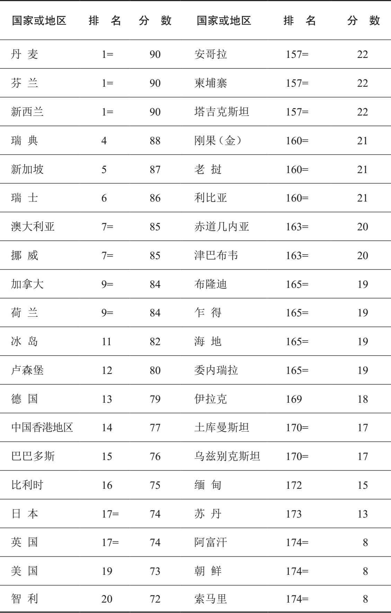
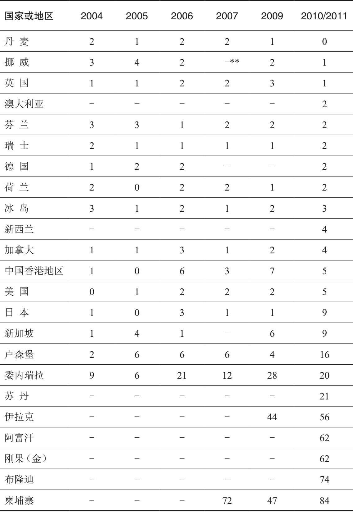

在1995年的一篇文章中，莫伊塞斯·纳伊姆提出了全球的“腐败井喷”。腐败的规模真的在增加吗？某些国家是否真的比其他国家更为腐败？要回答这些问题，我们就得能够衡量腐败。遗憾的是，这项任务特别艰巨，部分原因在于我们无法就何为腐败达成一致。
另一个重要因素在于获得信息的难度。在大多数犯罪和不端行为中，受害者都能把遭遇的经历报告给当局，往往也的确报告了。但是，那些行贿的国民却不太可能举报索贿或受贿的官员。其中一个原因是，多数情况下该国民自身的贿赂行为就是犯罪。另一个原因是，行贿者可能担心，作为回报领到的建房许可或出国护照会被撤销或没收，举报腐败官员会损害自身利益。那些不涉及双方交易的官员或其他负责人员，比如贪污公款者，其“受害者”往往是规模庞大又面目模糊的组织，比如国家或一家大公司；除非进行严格意义上的审计，其受到的损害甚至不会被察觉到，而审计是极少发生的。有时，“受害者”甚至更为抽象，比如是“社会”。最后，在上面列举的所有情形中，腐败人员获得的利益都是有形的。如果把社会腐败包括进来，就能够明显看出为何对于腐败的衡量（比如提携反哺关系的规模）会极为困难。
这些重要问题的确存在，但是要想确定某个国家或机构的腐败程度与其他国家或机构相比是在上升还是下降，要想降低腐败程度并在经验感受上显示出这种降低，我们就必须努力 衡量腐败程度。
衡量腐败的规模，有四种常用方法：官方统计法、印象和态度调查法、经验调查法、跟踪调查法。本章将考察这些方法，再顺带看看其他不那么常用的方法。
官方统计法
对许多分析人士来说，衡量腐败规模的基础是国家给出的官方统计数据。这些数据主要有两种，即法律的和经济的。法律数据一般最多能显示腐败的五个方面：
这些数据构成了一个基础，但存在很大问题，尤其是用于国家间的比较时。甲国前四项变量中的部分或全部数字比乙国低（相对于人口规模），原因可能 在于甲国腐败的确较少，也可能在于甲国社会对报道和调查的态度不够坚决。甲国国民可能认为，对于有嫌疑或众所周知的腐败进行报道意义都不大，因为当局无能为力、漠不关心或本身就很腐败，而乙国国民对他们的执法机构更为信任也更有信心。另一个问题是，许多国家并不提供与腐败明确相关的全面数字，或者相关的任何数字都不提供；这些数字通常被经济犯罪或滥用职权这些更宽泛的类别所掩盖，而这两个类别涵盖的现象一般都不会定性为腐败。政府机构有时发布的另一类与腐败相关的统计数据是经济类的，尤其是贿赂的平均数额和腐败对经济造成的影响。许多实际的腐败案例是无法确认的，数字只能是大概的估算；实际上，它们往往基于调查数据，比如询问受访者过去12个月中行贿的数额是多少，平均数额又是多少；这些数据是从问卷的寥寥几页中得出的，基础不够扎实。
官方统计至多不过揭示了最小 腐败规模。由于甲国调查指控时比乙国更为随意，最小 腐败规模也说明不了什么，而且很容易产生误导。能看到冰山一角固然很好，我们却无法由此得知冰山的整体大小。有鉴于此，当今的多数分析人士更倾向于采用官方统计之外的方法来评估腐败规模。
印象和态度调查法
在全球范围内，被引用最多的腐败规模方面的资料来自透明国际的“腐败印象指数”（CPI），这是一项印象调查。此类调查衡量的是人们对腐败的印象和态度：他们是否认为当局付出了足够努力来遏制腐败，在哪些部门腐败最为猖獗，等等。自1995年起，腐败印象指数每年发布，透明国际称之为“对民意测验的测验”或“对问卷调查的调查”。透明国际自身并不实际进行调查来得出腐败印象指数，当前它是通过对其他机构，即“专注于执政环境和商业环境的独立机构”进行的调查加以整理并确定标准，来为每一个受到评估的国家和地区打分、排名的。要对某个国家或地区进行评估，透明国际至少要获得三项与其相关的调查结果，这就解释了为何腐败印象指数从来不曾纳入世界上所有的国家和地区；2012年，它为现有的约200个国家和地区中的176个打了分。
2012年前，腐败印象指数的评级为0分（高度腐败）至10分（非常清廉），分数精确到小数点后一位（最早的腐败印象指数精确到小数点后两位）。2012年进行了调整，现在腐败印象指数评级为0分（高度腐败）至100分（非常清廉）。由于页面限制，2012年的全表无法在此呈现，表1给出了排名分别为前20和后20的国家和地区。
2012年对评级体系进行的修改，是为了反映腐败印象指数发生的其他更为显著的变化。该指数的一个问题是，由于数据来源每年都有变化，对结果进行历时比较严格来说并不恰当，透明国际自身也早就承认这一点。虽然没有替代数据，许多分析人士还是进行了这样的比较；其中比较诚实的人强调了此种做法不太可靠，并将数据与其他资料来源进行比较，以求减轻问题的影响。
由于腐败印象指数评估的国家和地区数量每年都有变化，历年排名 比较就尤其具有误导性。某国今年排名第40位，五年后排名第80位，粗心的人若假定那里的腐败情形大大恶化是情有可原的；但如果第一年评估的国家总数是80个，而五年后是160个，该国的情形事实上可能无甚变化，仍然在全体中处于中间位置。因此，在多数情况下进行历时比较时，引用某国的分数当然不像引用其排名那样容易产生误导。透明国际曾经宣布，新的腐败印象指数的得出方式意味着从2012年起，不同年份间的直接比较不存在问题了；不过，在分析的国家和地区数量稳定之前，关于分数和排名需要注意的问题仍然存在。
表1 2012年腐败印象指数（部分结果）

腐败印象指数还出于其他许多原因受到批评，比如它所采纳的印象主要来自商界人士和专家，而不是一般公众。许多比较性的印象调查都是如此，比如世界银行的商业环境与企业绩效调查（BEEPS）和世界经济论坛的全球竞争力报告（GCR）。也有许多调查针对的是一般公众对腐败的印象，但大多数只关注一个国家，并且有自己特定的一套问题。如果主要兴趣在于对多个国家进行比较，这类针对单个国家的调查就没有多大价值。
经验调查法
有些人坚持认为，印象调查并不反映“真实”情形。这种指责有两个问题。首先，他们暗示有人，也许就是批评者本人，知道真实情形如何。这是胡言乱语；由于定义上的分歧以及腐败现象天然的隐蔽性，在任何社会都没有人 能够知道腐败的实际程度。其次，无论如何，印象也是现实的一种表现形式。如果打算在某个国家投资的人由于较坏的腐败印象而放弃投资，这种印象就对行为产生了影响，因而也是一种现实；正如唯心主义和唯物主义哲学家数个世纪以来的争论所表明的，我们生活的世界既是实体的也是表象的，不存在单一的现实。
然而，努力以尽可能多的方式来衡量腐败程度是有意义的。批评印象调查的人往往提倡采用经验调查。在此类调查中，受访者不会被问及对腐败的印象，而是回答实际的腐败经验。常见的问题是：“过去12个月中你或你的家人有没有行贿过？”这类调查于1990年代首次提出时，许多专家充满怀疑，认为人们决不会承认行贿。现在我们有充分的证据表明，只要受访者相信调查者对隐私和匿名所作的保证，许多人是会坦陈行贿的。
部分出于对腐败印象指数所受批评的回应，透明国际于2003年引入了一种新式调查，将印象、态度和经验方面的问题融合在一起。这就是全球腐败晴雨表（GCB），自推出以来每一至两年调查一次。在透明国际的网站上，它被称为对“人们的观点和经验”的调查。与腐败印象指数不同，全球腐败晴雨表是由透明国际自身（利用调查公司在目标国家）完成的，与腐败印象指数相比，其独特的优势在于使用了一套标准化的调查问卷。所调查的问题也比腐败印象指数的问题更为前后一致，进行历时比较没有那么多困难。全球腐败晴雨表覆盖的范围没有腐败印象指数那么广，2003年调查的国家和地区总共才46个，其中部分国家和地区的调查结果相当不完整；后来进行了扩展，2010/2011年的调查覆盖了100个国家和地区——这个数字相当可观，但仍比腐败印象指数覆盖的少得多。同样由于页面篇幅的原因，此处只能摘录其中的一部分。表2给出的证据表明，许多国民在被问及时，是愿意 说出行贿经历的。汇编此表时，我决定只纳入位于腐败印象指数排名前20和后20，且在2010/2011年全球腐败晴雨表中得到评估的国家和地区，这样更方便对两套结果进行直接比较。
表2 全球腐败晴雨表的部分经验调查结果*（百分比，依2010—2011年得分排序）

在腐败印象指数和全球腐败晴雨表中，部分国家和地区排名悬殊。在2010—2011年度的结果中有一两个出乎意料之处：卢森堡和新加坡的贿赂率似乎比预期更高，而委内瑞拉和苏丹的贿赂率显然比它们2012年在腐败印象指数中的得分显示的要低很多。不过，两种调查方法得出的总体图景是一样的：相比贫穷的专制政体或动荡国家和地区的民众，富裕和民主国家和地区的民众行贿的可能性要小得多。
结束对全球腐败晴雨表的介绍之前，有三点有必要说明一下。首先，与目前为止呈现的所有数据一样，我们在分析时经常用到“似乎”一词。很有可能，某些国家的国民比其他国家的更害怕承认曾经行贿，这会使我们对各国之间腐败情形的解释有所失真；大多数社会调查数据，不仅是那些与腐败相关的，都应该谨慎对待。
其次，全球腐败晴雨表给出的经验问题有可能让我们对小型腐败了解很多，对于考察大型腐败则没什么用处，因为多数国民很少甚至从未接触过高层官员，比如政治人物。这是多数经验调查的一个重大局限，毕竟精英腐败的破坏性通常远远大于小型腐败。
最后，自2003年全球腐败晴雨表首次发布以来，其与腐败印象指数调查结果的相关性已有过多次分析；令人欣慰的是，两者高度相关。
在全球腐败晴雨表以外，还有许多以一般公众的腐败经验为考察对象的调查，其中国际犯罪受害者调查（ICVS）大概是最为人所知，也是最有公信力的。遗憾的是，此项调查并非定期举行，历次调查覆盖的国家数量也有很大变化。值得强调的是，对腐败印象指数和国际犯罪受害者调查之间的相关性也有过研究，结果是两者密切相关；这让人感到振奋，数据应用者对各种印象调查的可靠性由此信心大增。对商业领域的腐败经验感兴趣的读者，应该同时查看前面提到的商业环境与企业绩效调查以及国际犯罪商业调查（ICBS），虽然遗憾的是后者只进行过一次（时间是2000年；1990年代有过类似调查，但规模更小）。
本书写作时，另一项有用的“一次性”调查的结果是2014年欧洲民意调查中心腐败问题特别报告。现在，此项调查应该是定期进行的了。这是第一次，欧洲民意调查中心在调查中向欧盟成员国询问国民的实际贿赂经验；约12%的人声称自己直接认识受贿的人（在英国是0%！），但只有4%的人遭到索贿或被期待行贿。这种总体上的平均比例可能会有误导性，因为某些国家的数字远高于其他国家。25%的罗马尼亚人和29%的立陶宛人曾遭到索贿或被期待行贿，但在光谱的另一端，在斯堪的纳维亚国家以及芬兰、德国、卢森堡、葡萄牙和英国，该比例极低（不到1%）——这与采用其他调查方法获得的结果大体一致。
跟踪调查法
1990年代，世界银行提出了一种衡量腐败的富有想象力的方法，即跟踪调查。此方法主要分为两种：公共支出跟踪调查（PETS）和定量服务提供情况调查（QSDS）。对于一本入门书来说，这两种方法有些太专业了，但其基本方法和原理很容易解释。
1990年代期间，世界银行开始日益担忧，该行分配给发展中国家的资金在许多情况下无法到达目标人群手中。比如，该行用于帮助乌干达小学生接受教育的资金，大部分从来没有交给这些学生。世界银行于是采用了一种方法，在各个行政层面跟踪其资金，一直跟踪至各所小学，并从1996年开始与乌干达政府合作推进。结果，成效相当显著：1991至1995年期间，实际到达小学生手中的数额为平均每人13美分，到2001年上升到80美分以上。这是公共支出跟踪调查的一个例子。
定量服务提供情况调查的一个典型例子来自孟加拉国。世界银行曾怀疑，该行拨到那里用于提供医疗服务的资金，多数遭到虚掷或者使用不当。于是世界银行设计了一种跟踪体系，主要是在2002年这一年中多次突然造访医疗场所，以查清哪些医疗人员缺勤。调查显示，从世界银行拨款中领取部分薪酬的约35%的各类医疗工作人员，包括40%以上的医生，在本该在岗的时候并不在岗；项目的主要研究人员因此称之为“幽灵医生”。部分医疗人员的缺勤是有正当理由的，但查明的情况是，其他许多医生都有兼职：他们在本该为从公共资金中领取的薪酬工作时，却在干私活。同样的情况是，这项调查的实施本身就使局面得到了改善。
跟踪调查的一个显著优势是，它不仅能通过提供“事前和事后”的统计来衡量腐败，还能同时降低腐败，而这正是衡量腐败最终的也是最为重要的诉求。遗憾的是，与所有衡量腐败的技术一样，跟踪调查也有缺陷。比如，它只能衡量特定场合中的腐败程度，或者是行业（教育、医疗等）的或者是地区的，而不适于精确判定一个国家的总体腐败规模。它的成本，包括时间和金钱成本，同样很高：事实上，就其涵盖的范围来说，跟踪调查是本书分析的调查方法中最为昂贵的。最后，它要想顺利进行，目标国家的当局必须有意愿配合调查人员。乌干达政府对世界银行的方法和目标非常支持，坦桑尼亚当局对各种机构自1999至2004年进行的多项公共支出跟踪调查则远没有那么配合，或许是因为这种调查在他们看来属于外来干涉，因而无意参与；结果，在那里进行的公共支出跟踪调查效果就不理想。
其他方法
除以上分析的四种主要方法，研究人员还可以借助多种其他方法来判定特定背景下的腐败程度。其中之一是组织焦点小组 。这些小组通常由8至12人组成，成员一般来自公众而不是专家，组织者鼓励他们对某个主题进行45分钟至2个小时的讨论。研究人员只充当主持人和推动者，而不参与其中。大多数研究项目都会设置许多这样的小组，讨论内容通常会进行录音（有时只做笔记）。焦点小组聚集后，研究人员分析讨论内容，确定主导的印象和态度；计算机软件，比如N-Vivo [5] ，在此过程中能起到协助作用。
焦点小组研究的一个优势是，相对于进行大规模调查，它组织起来成本更低、更易操作。在公众调查中，如果正确取样，且受访者的人数不少于1000人，其结果就具有统计学意义；与此不同，焦点小组研究的结果，不能看作反映了一般公众的观点，毕竟样本太少。此外，由于小组成员能在讨论之后向当局彼此检举，这种方法不宜用来衡量腐败经验。
大多数焦点小组是以小组成员面对面的形式组织的，近来也有组织在线焦点小组的趋势；不过，多数分析人士认为这种方式不如传统方法令人满意。但有一种方法的确 主要是在线上经由电子邮件完成的，即德尔菲方法 。采用这种方法时，研究人员联系的是专家而不是公众成员，人数通常在8至50人。研究人员邀请他们回答许多问题，之后对回答内容分级排序。接下来，研究人员整理出最终报告，发送给每一个受访者，这是他们参与项目的激励因素。
德尔菲调查法有许多优势：成本不高；调查对象比一般公众更熟悉特定主题；参与调查者不必同时聚集一处；参与调查者可以同时提供关于腐败的详细信息，以及在具体环境中如何最好地减少腐败的专业建议。劣势也有：如果专家很忙，则耗时不短；取得一定程度的共识可能相当困难；调查结果不具有统计学意义。
第三种方法是进行访谈。比如，研究警察腐败可能要采访一系列相应机构中为数不多的对象：对于小型研究项目而言，要想结果有意义，可能要采访六名警察、六名调查记者、六名法官、六名反腐败非政府组织成员；在设立了腐败调查委员会并且这些委员会发布过研究结果的国家，还要采访委员会（比如美国的纳普委员会和莫伦委员会，澳大利亚的伍德委员会和菲茨杰拉德委员会）的六名成员。这些群体之间甚至群体内部的相似和不同之处，由此就可以得到分析和解读。
对于多数项目来说，最好的方法是采用半结构式访谈。此类访谈包含一系列向受访者询问的标准问题（这样研究人员就能直接比较群体之间和群体内部的回答），同时还在这些问题之后为自由讨论留下空间；毕竟，受访者往往会提出一些与主题相关而研究人员之前不曾留意到的问题，而且如果进行的是封闭式访谈（即严格遵循事先准备的调查问卷），则通常意味着研究人员会错过宝贵的“内幕”信息和“内行”视角。
第四种方法近年来作为一种研究工具已有很大变化，这就是内容分析。过去，在有限的时间内可能要对十年周期中的一种或多种报纸进行分析；要运用这种方法，就要求精心遴选文章，可能是特定时期内的，并且要求严格遵循固定的程式。随着网络资源和搜索引擎的出现，该方法现在成本已相对低廉，某个或某些国家的媒体如何报道腐败，包括报道频率、所报道腐败的类型和程度等，都能够快速、轻易地看出。调查委员会给出的腐败报告是能够加以系统分析的另一类文件，往往也是宝贵的信息来源；主要问题则在于，这种报告相当罕见。
要想检验这一点，就得进行另一类型的研究，但可以合理推测的是，公众的腐败印象受到媒体报道的数量和类型的影响。对媒体进行的内容分析无法衡量腐败本身，在当局并不系统发布官方统计的那些国家，报纸的报道有时只能让人窥见统计数据之一斑，比如刊出内政部长的一篇演讲。但是，这一方法能让人对国民或商界人士如何以及为何持有目前的腐败印象做出明智的假设。
第五，研究人员可以使用案例统计分析。这种方法需要对大量实际的腐败案例进行详细分析（通常基于媒体报道、诉讼程序以及访谈），之后对结果进行汇总和比较来确定腐败模式。此方法一般更适用于研究特定领域或地区，而不是推断全体国民的腐败，它能在很大程度上揭示特定群体内不同类型腐败的显著特点。
一种较新的方法是试验。越来越多的社会科学家正从其他方法转向试验法来检验自己的设想。原因之一是，许多人相信这种方法相比其他技术能提供更令人信服的因果解释：A是否真的导致 B，或者它们是否以某种方式关联着，只不过我们无法圆满解释？比如，我们可能想知道，“甲国海关官员比他们的乙国同行腐败得多”这种印象有没有事实依据。要验证这一点，可以往这两个国家走私一些小额物品（这样一旦被查也只会受到小额罚款），比如免税香烟，携带双倍于规定允许的数量，计算一下两国海关官员为获得小额贿赂而网开一面的频次。
试验法很吸引人，但用在腐败这样的敏感领域可能是成问题的。比如，为了测试交警的腐败倾向，我们想弄清能多么频繁地以行贿来逃避超速罚款，这可能会引起复杂的道德问题。如果我们真的超速，在统计学意义上就会增加一种可能性，即试验会把无辜公众置于危险之中。而且，公民权利的辩护者会质疑，把交警置于这种近于“钓鱼”的情境中是否说得过去。对于前一个问题，很难想出妥当的解决方法，后一个问题却可以通过确保试验只针对诱捕行动（即只用来确定早已有腐败嫌疑的警察），而非“钓鱼”（即让一个通常不会破坏规则的人直面诱惑而不能自已）来解决；读者们在这里可以回想一下食草型腐败和食肉型腐败的区别。换句话说，研究人员不会主动 行贿来诱惑平日里正直的警察，他们只是坐等索贿。
上面描述的海关官员和警察两个场景，都涉及现实情境中的试验，因而被称为现场试验。还有一种研究在实验室中进行，在受控的环境中营造场景。与现场试验一样，对腐败程度和倾向进行的此种形式的研究也是近年来才有的，始于2000年代初期。不过这一领域的探索性研究早已带来许多启示，比如发达国家的女性通常比男性更不易腐败，在发展中国家情况则没有这么明显。
诸位可以想象，在不同类型的试验中，既包括现场试验也包括实验室试验，会出现许多道德问题和实际问题。同样应该显而易见的是，实验室试验（比如确定某些国家的国民是否比他国国民对腐败更为宽容）的结果必须谨慎对待。我们不仅需要在解释结果时“跳出窠臼”来思考，在参加试验的人数量不多的情况下，还要对试验结果的普遍性持怀疑态度。由此就出现了一个重要问题，即实验室里的受控环境和日常实际行为之间的关系；有些参与试验的人在现实情境中的行为可能会截然不同。这些只是许多原因中的一部分，它们解释了为何这种原则上很有吸引力的方法，也有自己的问题。不过，与腐败相关的试验已经取得成功，给我们带来了新的视角、提出了新的问题，说明这一方法已经开启了激动人心的新的可能性；我们所要做的只是继续在技术上进行完善。
最后一种差别很大的方法是代替 法。该方法受到一些机构，比如全球诚信组织的青睐，它声称既然我们无法圆满地衡量腐败本身的规模，更好的选择就是去探究为遏制腐败我们正在做些什么。在一年一度的（直到近年的）《全球诚信组织报告》中，全球诚信组织考察了各个国家的不同机构（政府当局、非政府组织、媒体等）所采取的措施，以及这些措施的推进和落实，并给各国打出了总体分数。这是一种有趣的替代方法，虽然也存在过于倚重官方表面声明的危险。不过，了解政治精英们表面上对腐败问题有多么重视、他们为提高诚信水平在付出什么样的努力以及没有付出哪些努力，还是有好处的。此外，相比于其他数据来源，全球诚信组织更倚重当地专家的评估意见。2014年初，全球诚信组织着手对其所用的方法加以修正，因此最近的完整报告是针对2011年完成的，分析的国家有30多个。
现在，本章标题所提的问题应该有明确答案了：我们能够 衡量腐败，只是不那么精确。本章概述了多种衡量腐败的方法，每一种都有可取之处，同时又都不够完美。有些方法衡量的是态度，另一些衡量的是经验。有些方法想获取的是“全景”，即一国的总体腐败程度，另一些针对的是具体的机构、领域或地区。有些方法需要向一般公众发放问卷，另一些则将调查重点放在商界——这就是为何用不同方法从同一个国家得出的结果，有时看起来会截然不同的原因之一。在衡量社会腐败方面，这些方法基本上都派不上用场。因此，当我们说想要衡量腐败时，应该清楚地意识到试图弄清的确切 内容是什么。当然，在几乎所有的研究项目中，使用的方法越多越好，即采用所谓的“混合方法”或多角度方法（从尽可能多的角度切入衡量问题）。遗憾的是，由于涵盖的国家不同、对问题的表述不同等，这一做法现在无谓地增加了难度。
不过很明显的是，富裕和稳定的民主国家一般看起来腐败最少，而贫穷的独裁国家和那些面临困境的国家腐败最甚。这一一般现象即使会有例外，也可能只是验证了规则。北欧国家几乎总是表现为腐败程度极低，无论采用何种调查方法。
综合来看，有必要强调三个重要的方面。首先，无可取代的是，对调查方法的选择要明智，要仔细权衡，对结果的解释要敏锐。复杂的计算机统计技术能为我们衡量腐败助一臂之力，但并不能代替清楚明了、合乎情理的概念化过程。
其次，这里提到的几乎所有方法都是新近应用于腐败研究中的。到1980年代，少量商业分析中纳入了对特定国家腐败程度的评估，比如国家风险国际指南，但它们既没有得到普遍采用，也不像1990年代和2000年代出现的调查那样明确地专注于腐败问题。腐败印象指数首次发布于1995年，全球腐败晴雨表首次发布于2003年，跟踪调查首次实施于1996年，而试验研究的结果首次发布于2000年。最新式的内容分析法，只是因为网络资源的出现才得以实现。因此，我们无法断定近年来真的出现了“腐败井喷”；能够 断定的是，对腐败问题的意识大大增强了。
最后，那些对衡量腐败的努力持批评态度的人，往往指责我们的技术不仅不够完善，还有可能适得其反。本来有意向捐助的人，可能会选择不为某个国家提供援助，因为各种调查方法已经显示，该国精英会从捐助中盘剥太多。令人欣慰的是，世界上打击腐败的两大机构，即透明国际和世界银行，现在已经清楚认识到，削减对高度腐败的国家的援助，对亟需援助者的伤害很可能远远大于对腐败精英的伤害。两大机构一直在以切实又敏锐的方式解决这一问题，跟踪调查只是许多可能的解决方案之一。
对于腐败的经验研究，我们仍然处于起步阶段，存在一些初期问题是意料之中的。尤其是，在衡量大型腐败方面我们仍然能力不足。但是，技术在不断完善，2012年腐败印象指数备受欢迎的改变就是一个例子。说到底，不完美但是持续改进的衡量总好过完全不加衡量，后者正合腐败分子的心意。